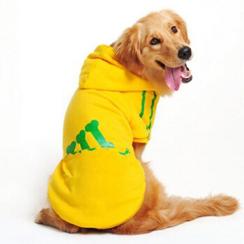

发展历史
1935年，意大利，两只博美犬。那时的博美犬鼻子和耳朵都比现在的博美犬大，给人的观感更为机警聪明灵巧。
1929年，德国，两只小短毛德国腊肠犬。那时的腊肠犬虽然身体也略长，腿略短，但身形比例仍较为均衡，没到怪异的程度。
20世纪初，德国牧羊犬，它像人一样站立着替他的女主人“拍照”。据说那时的德牧强壮灵活到可以跳跃2.5米的高度。
1938年，美国，博美犬的特写。那时的博美更有几分狐狸身上的那种灵气。
1949年7月25日，英国，一名军官和一只牛斗牛犬。那时候的斗牛犬看起来更敏捷灵活。
1900年代，地点不详，大丹犬，那时拥有坚挺的耳朵和竖直的双耳大丹犬加上流畅分明的身体修条，看起来神奇又威武。
1931年，德国柏林，狗展赛冠军大丹犬Edda von Treuenbutzen。那时拥有坚挺的耳朵和竖直的双耳大丹犬加上流畅分明的身体修条，看起来神奇又威武。
20世纪初，地点不详，德国腊肠犬和巴吉度猎犬。那一年巴吉度猎犬的耳朵还没有大到成为身体的负担，眼睑也没有下垂到会经常外翻或内翻，没有多余下垂的皮肤，仍然是一只看起来灵活矫健的不那么哀伤的短腿狗。